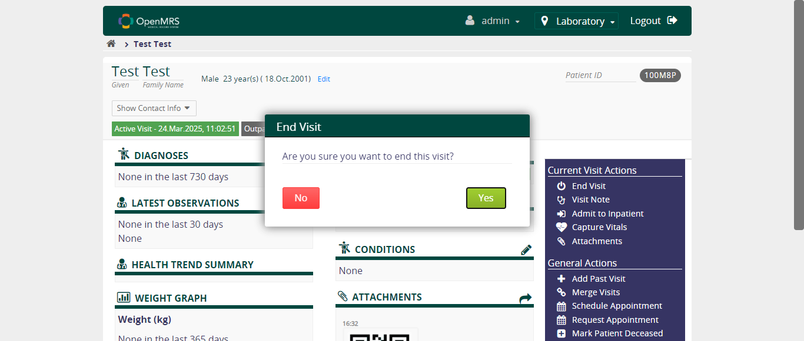

-
User register and delete a patient in OpenMRS
4:32:29 pm / 00:00:55:201 Fail
User register and delete a patient in OpenMRS
03.24.2025 4:32:29 pm 03.24.2025 4:33:24 pm 00:00:55:201 · #test-id=1FailUser Successfully Register, delete, and verify the patient is deletedGiven User open the browser and hit the site urlAnd User enters the Admin username and password, selects the location, and clicks on the login buttonThen User verify the dashboard page is redirectedAnd User register a patient using detail of DemographicsThen User verify the demographic details at confirm pageThen User clicks on confirm and verify the patient details page is redirectedAnd User clicks on start visit and clicks on confirm visitAnd User uploads the file and verify the toaster messageThen User redirecting to Patient details screen and verify the attachmentThen User verify the Recent Visit has one entry for the current date with the Attachment UploadAnd User clicks on end visit and delete the patient by providing the reasoncom.openmrs.stepDefinitions.CommonSteps.tearDown1(io.cucumber.java.Scenario)Failed Step ScreenshotThen User clicks on confirm button and verify the toaster messageStep skippedThen User verify the deleted patient is not showing by using the search boxStep skipped
-
org.openqa.selenium.ElementNotInteractableException
1 tests
org.openqa.selenium.ElementNotInteractableException
1 failedStatus Timestamp TestName Fail 16:33:04 pm And User clicks on end visit and delete the patient by providing the reason User register and delete a patient in OpenMRS.User Successfully Register, delete, and verify the patient is deleted.And User clicks on end visit and delete the patient by providing the reason
-
@Smoke
1 tests
@Smoke
1 failedStatus Timestamp TestName Fail 16:32:29 pm User Successfully Register, delete, and verify the patient is deleted User register and delete a patient in OpenMRS.User Successfully Register, delete, and verify the patient is deleted
Started
Mar 24, 2025 04:32:28 pm
Ended
Mar 24, 2025 04:33:24 pm
Features Passed
0
Features Failed
1
Features
Scenarios
Steps
Timeline
Tags
| Name | Passed | Failed | Skipped | Others | Passed % |
|---|---|---|---|---|---|
| @Smoke | 0 | 1 | 0 | 0 | 0% |